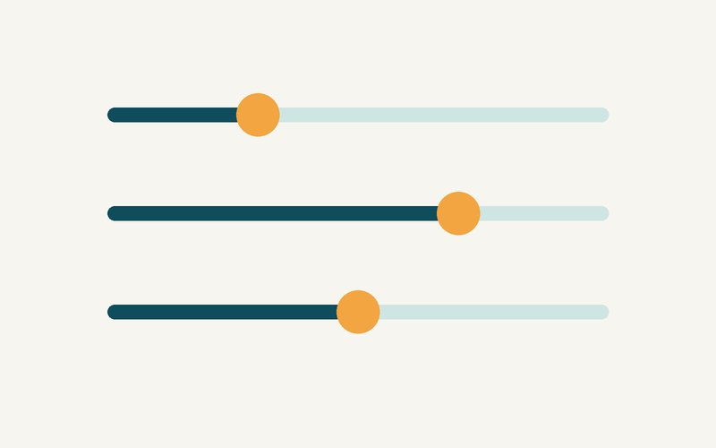
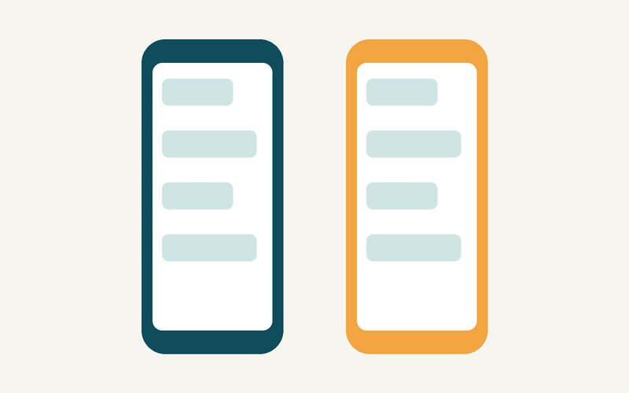

Quiet places
A map of example libraries and cafés in Utrecht to try for a calm conversation.
For deaf & hard-of-hearing people in the Netherlands
Show a clear communication card to anyone, find quiet places that are easy for lip-reading, and learn sign language at your own pace. All in one calm place.
Pick what you need right now.
A map of example libraries and cafés in Utrecht to try for a calm conversation.
Learn basic Dutch Sign Language (NGT) with short, looping videos.
Compare live-transcribe apps for iOS and Android, side by side.

Bigger text, high contrast and a dark theme, your way.
Three everyday situations Stilpunt is built around.
Lip-reading needs a clear view of the speaker’s face. The card helps you ask for that in one tap.
Find a quiet library or café near you to try for group work.

Live Transcribe is Android-only. Compare tools so everyone can follow along, on iOS or Android.